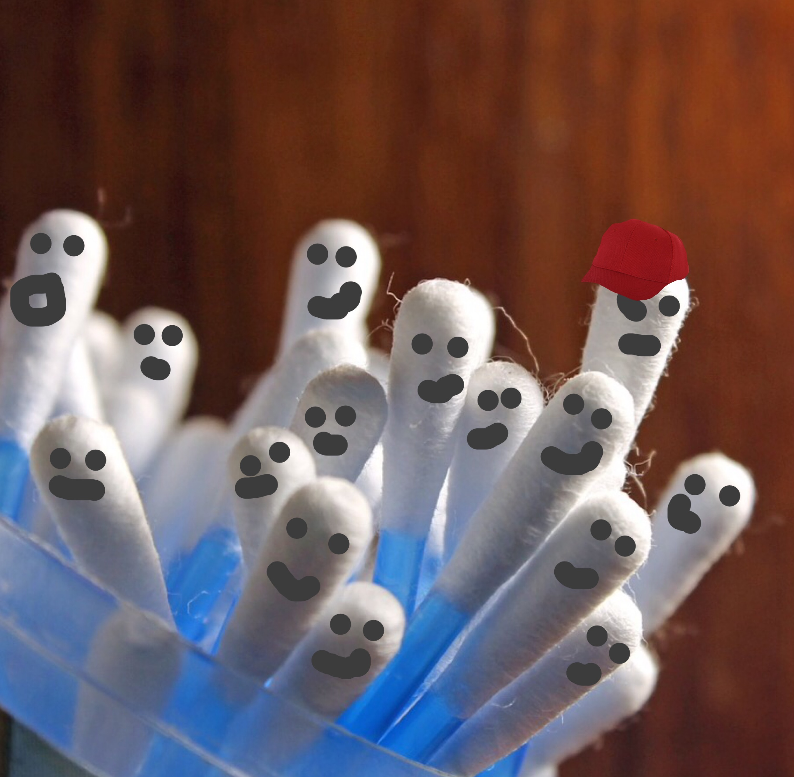
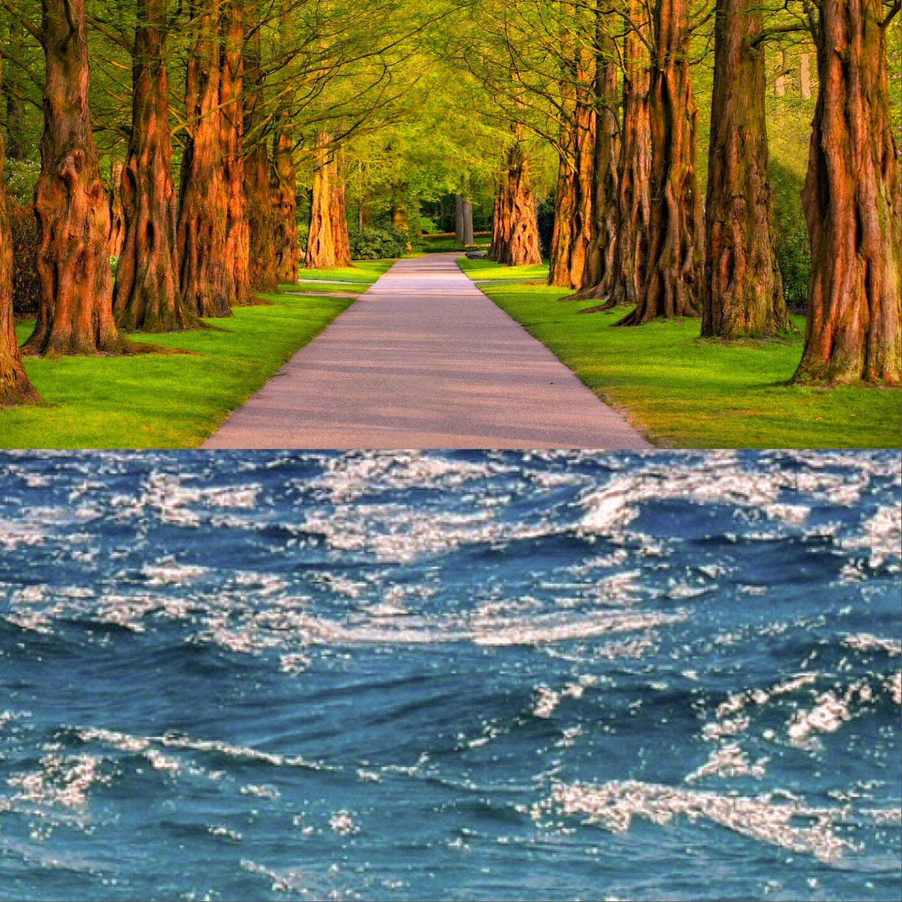
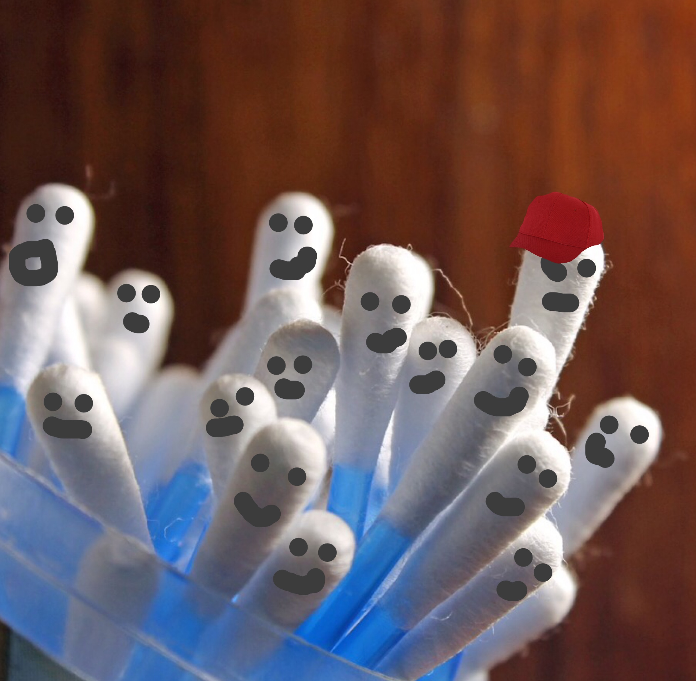
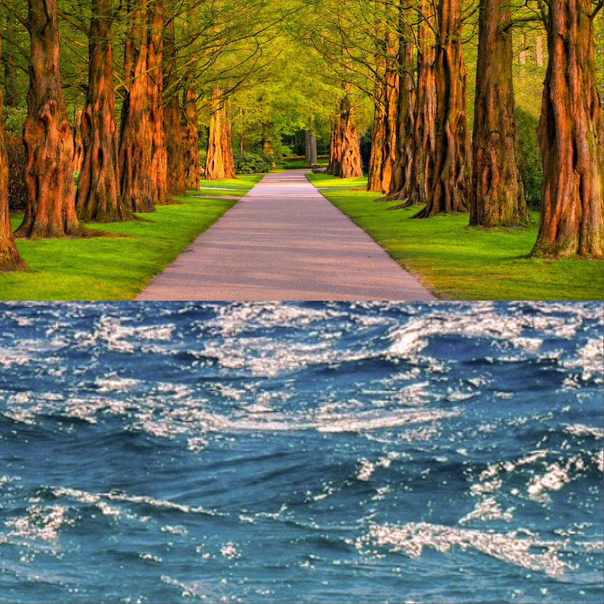

En effet il y a pas mal de plastiques et de polystyrènes...





Deviens un héros de l'océan comme lui !

Salutation visiteur!
*Bloup !* Eh bien, ce sont le plastique et le polystyrène ! En effet ces derniers se situent entre 30 et 97% des déchets sur une plage !
Comme tu dois te douter, on trouve aussi généralement des mégots mais aussi des objets en verre et du cordage, ce dernier provient généralement des navires.
Eh bien... ATTENTION JE COMPTE JUSQU'À 3! 1... 2... 2,49549... Bon j'arrête et bien ce sont les CONTONS- TIGES ! Eh oui, c'est ces trucs que tu utilises pour nettoyer tes oreilles ! Et dire que sur la plage tu as peut-être marché dessus :) ! Incroyables, des cotons-tiges se baladent dans l'océan et reviennent sur nos magnifiques plages... Mais comment est-ce possible ? Et bien en fait, des petits malins les jettent dans les toilettes et non dans une poubelle.... Ceci n'est pas un poisson d'avril ;) !
Et bien tout d'abord, les déchets provoquent la pollution atmosphérique, en se décomposant les déchets modifient l'air que tu respires ! En plus, leur décomposition ou dégradation peuvent être très longue, une pile met 7869 ans pour disparaître ! Et ceci peut faire malheureusement diminuer l'espérance de vie... Préparez-vous en 2345 à vivre entre 2 et 45s ! Et on dira plus "centenaire" pour les plus vieux mais "minutaire" ^^ ! En plus si les déchets se situent dans l'océan, mes amis les animaux aquatiques peuvent confondre ceci pour de la nourriture.... Mais on expliquera ceci mieux en détail sur la page de Wikiglouglou concernant les continents plastiques...
Tout d'abord parmi les gens il y a des enfants, ces derniers ne se rendent pas compte de leur mauvaise action pour la nature en jetant leurs paquets de bonbons. En plus ceci peut être causé par les parents qui jettent leurs déchets à la vue de l'enfant qui peut donc trouver ceci normal ! C'est pour ça que l'auteur a créé ce petit site qui avec ses aspects peut pour lui leur montrer la réalité de l'activité humaine sur l'environnement (en particulier ici sur l'océan). Il y a aussi une question psychologique chez ces personnes, en effet d'après une étude plus un environnement est sale et dégradé, moins les humains avaient envie d'en prendre soin, ils peuvent penser qu'ils ne sont pas les principaux pollueurs et que ne pas jeter leurs canettes ne changera en aucun cas ces lieux déjà très pollués. Tout ceci est donc une question d'éducation, ils faut apprendre dès le plus jeune âge les graves conséquences de ne pas jeter ses détritus à la poubelle.
Eh oui mais ils ont comme simple différence un lieu différent !
-La pollution terrestre concerne les sols au-dessus de l'eau (où tu es situé normalement à part si tu vis sur un nuage mangeur de déchets ^^). Celle-ci représente 80% de la pollution globale !
-Quant à la pollution marine, elle concerne la présence de tous les déchets au sein de l'océan. Malheureusement ces déchets ne représentent pas les cannettes «coca-glouglou » et autres déchets provenant des poissons mais bien une nouvelle fois les nombreux rejets de l'Homme ! Pour finir la pollution marine représente 20% de la pollution globale.
Il existe de nombreuses solutions à différentes échelles :
-tu peux participer aux Initiatives Océanes ! Ce sont des nettoyages et des collectes de déchets prévues partout dans le monde (concernant les littoraux) par des bénévoles grâce à Surfrider Foundation Europe, une Association qui défend la gestion durable de l'océan (la qualité de l'eau dans le temps). Jette un œil sur leur site s'il te plaît , tu pourras voir les collectes prévues et pourquoi pas de participer à ces nettoyages avec des amis ou ta famille ! Tu peux même organiser ta propre collecte ! Lieu du site : https://www.initiativesoceanes.org/ . Il existe également d'autres organismes, renseignes-toi sur internet.
-tu peux ramasser les déchets près de chez toi, tu peux par exemple faire un aller-retour dans ta rue et ramasser les déchets que tu vois ! Tu peux t'équiper d'un sac qui regroupe tous les déchets. Par contre quand tu auras fini, trie bien les déchets ! Le mieux serrait d'habiter près de la mer car tu pourras faire la même chose sur une plage ^^.
-créer un moyen d'information concernant les déchets (Site internet, blog, comptes de réseaux sociaux, affiches publicitaires etc...).
Fautes d'orthographe, belles idées pour remplir cette page de Wikiglouglou ?
Contactez nous ici:
-Mail: lunetdevinf@gmail.com
-Youtube: https://www.youtube.com/channel/UCLADMe-lGDABHRG9gpjnofw
En effet il y a pas mal de plastiques et de polystyrènes...


Deviens un héros de l'océan comme lui !